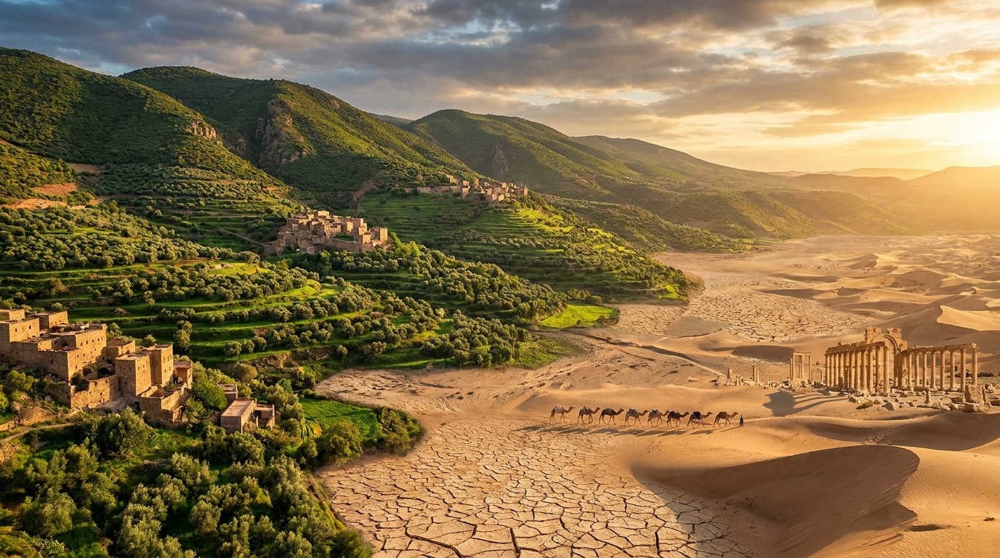
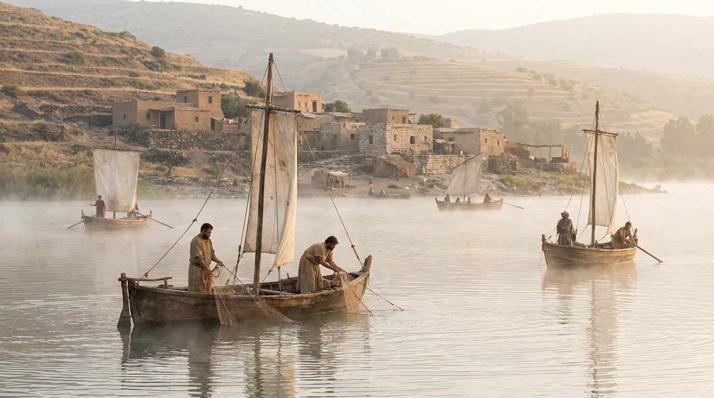
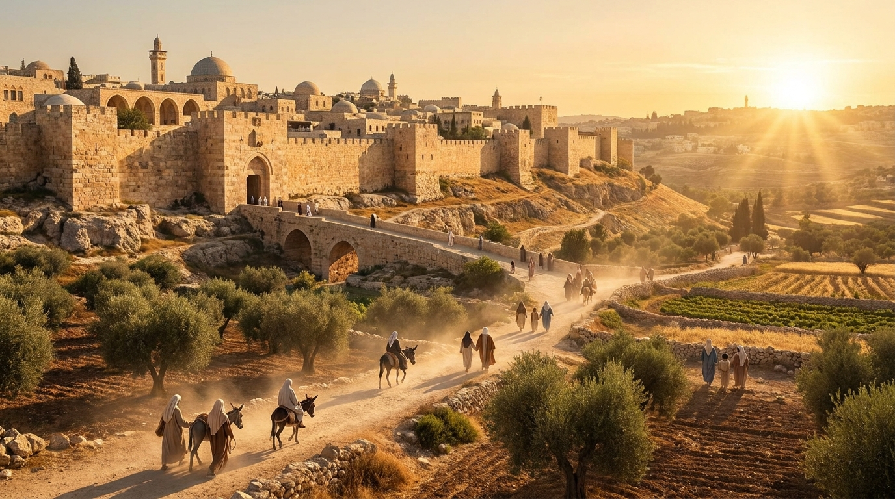
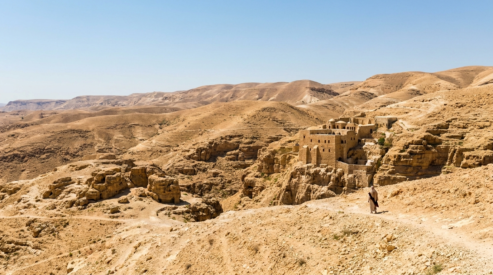

O Quinto Evangelho
A Terra onde os eventos bíblicos ocorreram é frequentemente chamada por estudiosos de "o Quinto Evangelho". Conhecer o clima, o relevo, as distâncias e a localização das cidades dá vida às histórias e nos ajuda a entender as dificuldades e os milagres vividos pelo povo de Deus.
Neste estudo:
⛰️ Relevo e Clima

A Terra de Israel possui uma diversidade geográfica impressionante em um espaço muito pequeno. Em poucas horas de caminhada, é possível sair das montanhas nevadas do Monte Hermom para o calor extremo do Vale do Jordão. As estações de chuva e seca ditavam o ritmo da vida, da agricultura e das festas religiosas.
💧 Corpos D'água Importantes

A água era (e ainda é) um recurso vital e estratégico. O Rio Jordão, onde Jesus foi batizado, corta o país de norte a sul. O Mar da Galileia foi o principal palco do ministério de Cristo, enquanto o Mar Morto, o ponto mais baixo da Terra, representa um ambiente inóspito, mas cheio de história.
🛣️ Rotas e Caminhos Antigos

Israel era a "ponte" terrestre entre três continentes (África, Ásia e Europa). As grandes rodovias internacionais da época, como o "Caminho do Mar" (Via Maris) e a "Estrada dos Reis", passavam por ali. Isso explica por que a região era tão disputada por grandes impérios e como o evangelho pôde se espalhar tão rapidamente depois.
🏙️ Cidades Estratégicas

Jerusalém, localizada no alto dos montes de Judá, era o coração político e espiritual. Mas outras cidades como Jericó (a cidade mais antiga do mundo), Cafarnaum, Éfeso, Corinto e Roma desempenharam papéis cruciais tanto no Antigo quanto no Novo Testamento, moldando a cultura e a religião da época.
🏜️ O Deserto

O deserto (Negev, Sinai, Judeia) não era apenas um local geográfico, mas um lugar teológico de provação, dependência de Deus e revelação. Foi no deserto que o povo vagou por 40 anos, onde Davi se escondeu de Saul e onde Jesus foi tentado antes de iniciar seu ministério.
✅ Resumo
A geografia bíblica não é apenas um pano de fundo, mas uma participante ativa da narrativa. Entender onde as coisas aconteceram transforma a nossa leitura de preto e branco para cores vibrantes e tridimensionais.
🎥 Aprofunde seu estudo
Deseja conhecer mais sobre a Geografia Bíblica?
Assista a este excelente material didático.
Continue sua jornada:
- Próximo Tema ➡️ Cultura Judaica
- Temas 📚 Ver todos os estudos
Apoie este projeto 🌱
Se este estudo foi útil, considere apoiar a manutenção do site.
Chave PIX (Celular):
marcosmontanari2@gmail.com